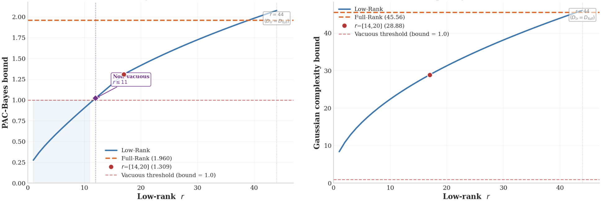
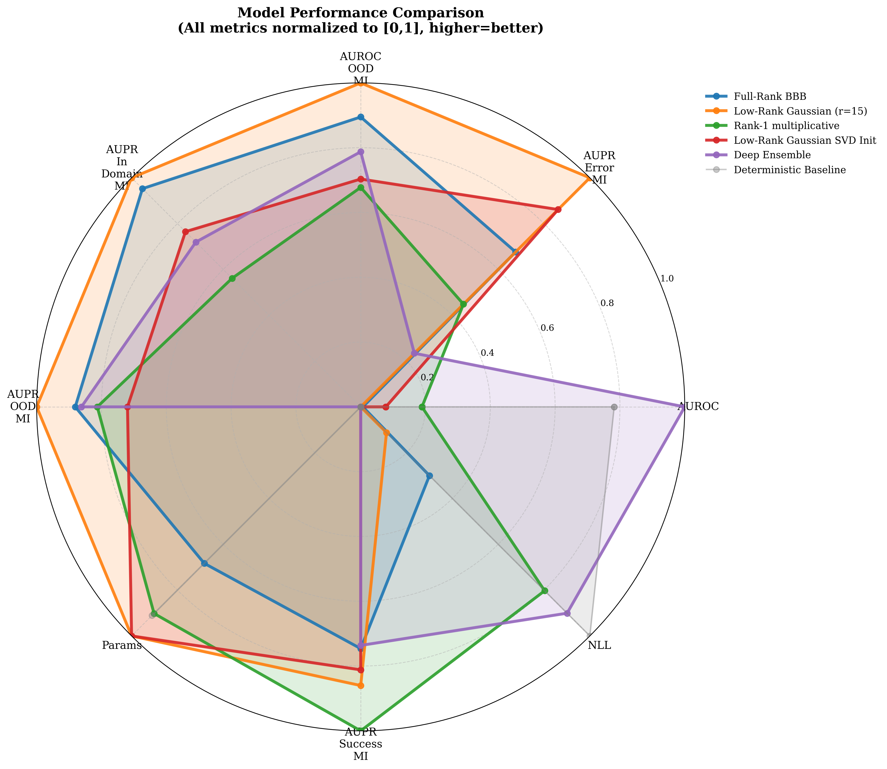
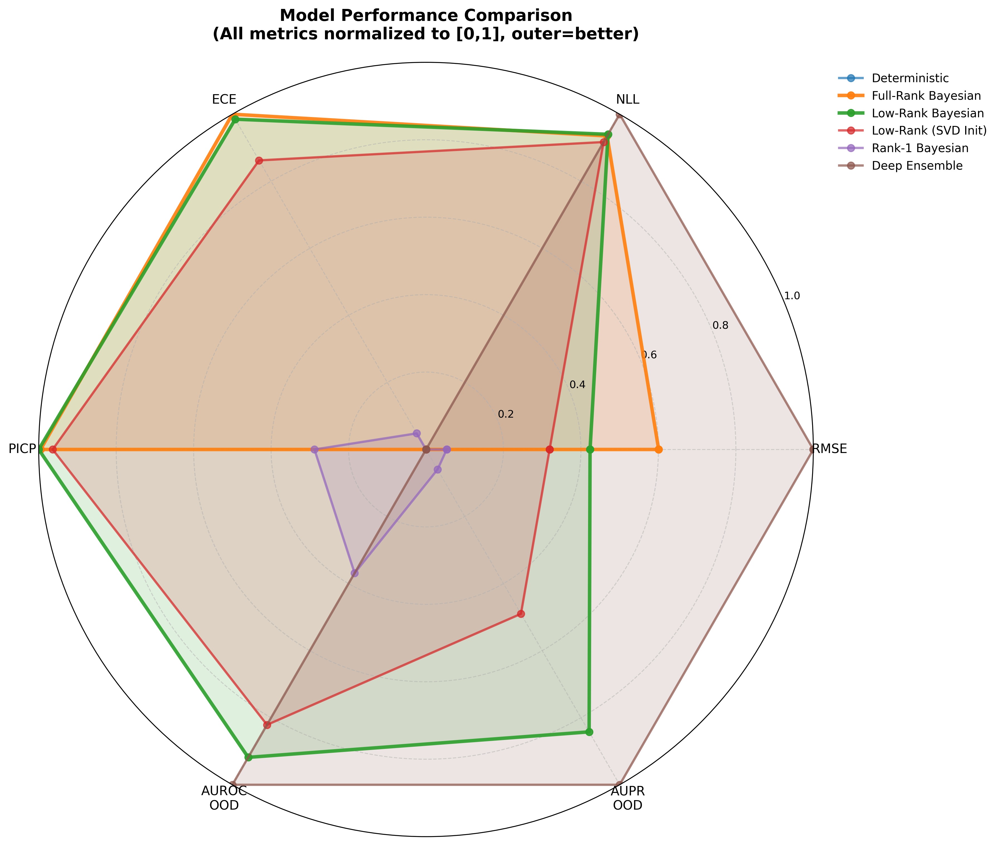
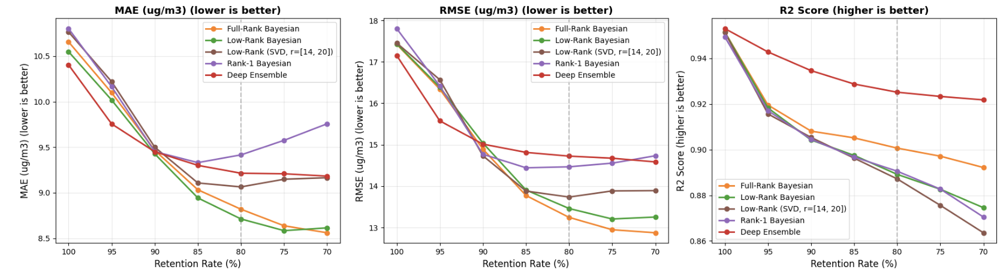
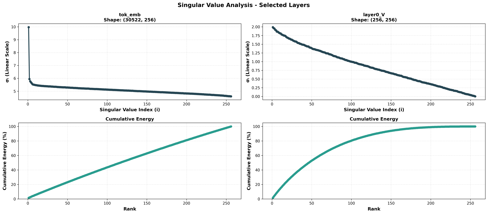

Bayesian uncertainty is powerful. Full weight-space posteriors are expensive.
Modern networks scale by widening matrices. Standard BNNs put distributional parameters on every entry.
The hidden cost is not only parameters. It is independence bias.
Mean-field over W
Each weight fluctuates alone.
Cov(Wij, Wi'j') = 0
Low-rank factors
Shared latent factors couple weights.
Cov(Wij, Wi'j') ≠ 0
This trades a bias of independence for a bias of correlation.
Parameterize matrices through latent factors.
Uncertainty is learned in factor space, then pushed into weight space.
q(A,B) induces qW through multiplication.
The posterior is not defined by a density over all of weight space. It is the image of a factor distribution.
qW is singular with respect to Lebesgue measure.
If W = ABT with A ∈ Rm×r, B ∈ Rn×r, then qW(Rr) = 1.
For r < min(m,n), Rr has Lebesgue measure zero in Rm×n.
“Singular” here means measure-theoretic singularity: posterior support is constrained to the rank-r set.
The distinction is geometric, not cosmetic.

Shared factors create correlation patterns mean-field cannot express.

The geometry buys more than compression.

Same posterior idea, three model families.
Variational layers act as drop-in replacements for standard Keras layers.
Competitive uncertainty across tabular, time-series, and text benchmarks.



Deep Ensembles remain strong on some in-distribution likelihood metrics; the low-rank posterior changes the quality-efficiency frontier.
Uncertainty should decide when the model abstains.

The practical target is not only calibrated confidence. It is useful confidence under distribution shift.
O(mn) becomes O(r(m+n)).
The rank constraint is aligned with observed singular value decay.
When layer spectra decay quickly, the rank-r manifold is not an arbitrary bottleneck. It is a structured approximation class.
This is where approximation theory meets posterior geometry.
